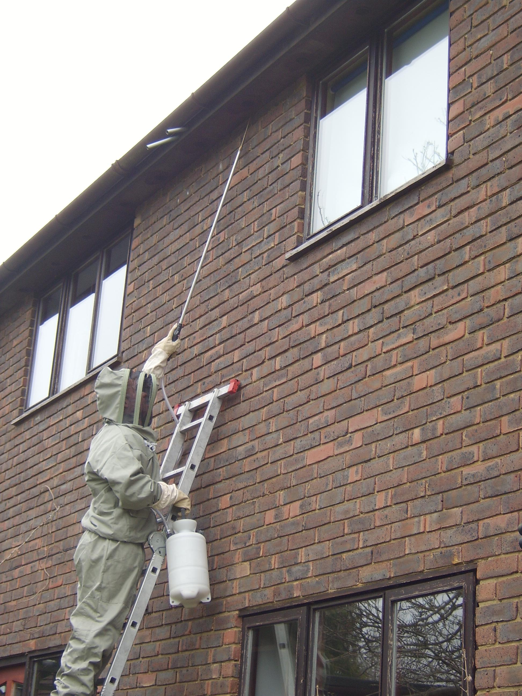

- Firstly and most importantly, is it safe and legal to treat the nest?
Normally the answer is Yes, but in some instances it is not, especially if one of Britain's protected species is present!
A written Risk Assessment will be completed at this point to identify any hazards or risks.
- The nest will be treated with professional use insecticide,
administered using professional equipment following manufacturers statutory instructions and following latest safety legislation.
- Once a nest has been treated all its occupants will die. The nest colony cannot relocate elsewhere.
- Wasps will try to sting repeatedly anything that endangers the nest therefore precautions
must be taken as the more stings we receive the higher chance of anaphylactic shock.
- Sometimes a clicking noise may be heard from the nest.
This is the noise made by wasp larvae and this noise may still occur for a short time after the nest has been treated.
- The nest will normally be destroyed within 24hrs. If after 48hrs the nest is still active, the insecticide has missed its target. Ring me for a FREE recall.
